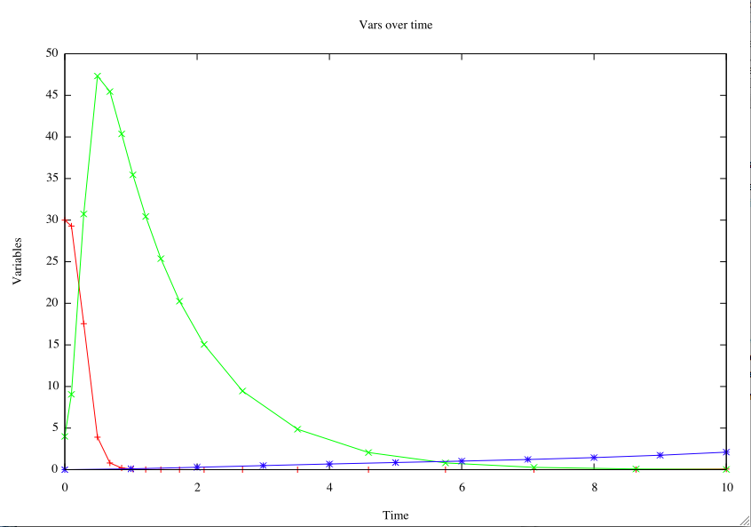

The DiffEQ gem consists of several smaller libraries designed to be used together. The main ones are a symbolic expression library, a numerical integrator and the main DiffEQ component.
The DiffEQ::SimpleExpression class is designed to allow you to create symbolic expressions and manipulate them. For instance:
exp = DiffEQ::SimpleExpression.new "x^2 + 3.4x + 9 + sin(x^3)"
This will create a symbolic expression object for later use and evaluation. Variables must start with a letter, but may have longer names like "xyz" or "var3". There can be as many as you like in a single expression.
You can evaluate an expression with the evaluate method. For the expression above, you might write exp.evaluate :x => 3.7.
SimpleExpression also knows about order of evaluation, and uses the normal mathematical ordering, sometimes called PEMDAS. Most operators associate left-to-right, but exponentiation associated right-to-left.
Parentheses, square-braces and curly-braces must match appropriately, but all are simply treated as parentheses. Again, this is a mathematical convention, even though it doesn't match normal usage in a programming language. Similarly, placing a number next to a variable ("3 var3", "7x", etc) implies multiplication.
The integrator library contains modules for generic numerical integration for adaptive or fixed step sizes. Currently, it implements Cash-Karp fourth-order Runge-Kutta integration with fifth-order error checking, in both fixed and adaptive step sizes.
There are eventual plans for other integrators, and Euler would be trivial to add. Cash-Karp 4/5 Runge-Kutta should be quite suitable for most common purposes, though.
A numerical integrator requires an initial vector of values and a way to calculate derivates. The integrator library uses a Ruby proc object which takes a time value and a vector of values, and returns a vector of derivative values.
For instance, in an exponential function the derivative at a point is proportional to the value at that point (d/dt of et is et). So the Ruby proc to calculate that derivative for a Vector of length N:
y0 = Vector.elements([1.0]*N)
deriv_proc=proc { |t,yvec|
yvec.dup
}
Some integrators take steps of a fixed size with each integration step. That size is normally passed to the integrator, along with the number of steps to take. Fixed-size steps are easy to write, but can take a very long time for some functions since the step size needs to be very small if any part of the function has very high curvature.
Adaptive integrators, however, take steps of varying size depending on the curvature of the function being calculated. Normally an adaptive function will take parameters for the acceptable level of error and the minimum and maximum step sizes that should be used. The step size used in the most recent calculation will be re-used for the following one.
A lot of the machinery of adaptive integration is written in the same way for every integrator, the integrator library will use a driver function for adaptive integrators to take as many steps as required to cover a given amount of time. This is a simple way to turn a fixed integrator into an adaptive one. For either type of integrator, all intermediate values can be logged.
The above two libraries can be coordinated with the DiffEQ module. Variables are registered through it, and it looks at the different variables in the whole system it is given, and the relationships of the equations.
Given an appropriate set of derivatives and initial values, DiffEQ can set up the numerical integrator appropriately and graph the results.
Here is a code excerpt for the Lotka-Volterra predator-prey equations. Some resulting graphs are below:
All components of DiffEQ are under the MIT license.